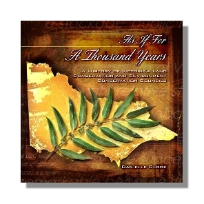

As if for a Thousand Years
The history of public land conservation in Victoria and the legacy of community engagement and environmental monitoring
When Bill Borthwick, Minister for Lands, welcomed the newly formed Land Conservation Council in 1971, he advised them to make their recommendations on public land use for Victoria ‘as if for a thousand years’. And with that he left them to it.
The Land Conservation Council was to provide a unique framework free from political intervention, where experts could debate public land use issues and recommend fair and balanced public land use, enshrining a representative reserve system for Victoria’s remaining natural heritage. This is the story of t how the Council developed into a leading model for community consultation, surviving dramatic changes to the political and environmental landscape but, despite name changes, remaining a stable and conciliatory force in the battle over public land in Victoria.
From the early battles to save the Little Desert, to contentious marine parks and the Alpine Wilderness areas, the Land Conservation - now the Victorian Environmental Assessment Council - has continued to provide a forum for rational and evidence-based debate over the best way to balance the protection of Victoria's remaining natural heritage with other social, cultural and economic interests.
Published by the Victorian Environmental Assessment Council
Available in ebook
Praise for the book
‘a rare insight into the unique set of social and political circumstances that led to the creation of the LCC’ —John Landy
‘What a good book!…Clode’s scholarship is accessible, data rich, informative and readable’ —Victorian Naturalist
‘an easy writing style…a most valuable reference —Park Watch